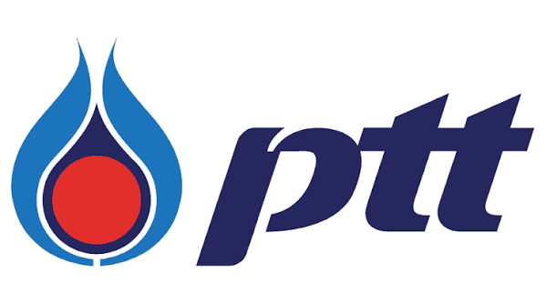

PTT| สถานที่ | Rayong |
| เงินเดือน | 15,000 - 20,000 ฿ |
| ช่วงเวลาฝึกงาน | มิถุนายน-กรกฎาคม |
| เปิดรับสมัคร | มกราคม |
| ลักษณะงาน | Onsite |
| สาขาที่รับ | วิศวกรรมเคมี / อุตสาหการ |
| เกรดเฉลี่ยขั้นต่ำ | 3.00 |
| ทักษะที่ต้องการ | PythonAutoCADExcelProcess Design |
| คำอธิบายงาน | ออกแบบและปรับปรุงกระบวนการผลิต |
| สถานที่ | Chonburi |
| เงินเดือน | ไม่ระบุ |
| ช่วงเวลาฝึกงาน | มิถุนายน-กรกฎาคม |
| เปิดรับสมัคร | กันยายน |
| ลักษณะงาน | Onsite |
| สาขาที่รับ | วิศวกรรมเคมี / อุตสาหการ |
| เกรดเฉลี่ยขั้นต่ำ | 3.00 |
| ทักษะที่ต้องการ | PythonExcelMinitabP&ID |
| คำอธิบายงาน | ออกแบบและปรับปรุงกระบวนการผลิต |
| สถานที่ | Saraburi |
| เงินเดือน | 10,000 - 15,000 ฿ |
| ช่วงเวลาฝึกงาน | พฤษภาคม-กรกฎาคม |
| เปิดรับสมัคร | ธันวาคม |
| ลักษณะงาน | Onsite |
| สาขาที่รับ | วิศวกรรมอุตสาหการ |
| เกรดเฉลี่ยขั้นต่ำ | 2.75 |
| ทักษะที่ต้องการ | ExcelLeanSAP |
| คำอธิบายงาน | วางแผนการผลิตและวิเคราะห์ข้อมูลสายการผลิต |
| สถานที่ | Chachoengsao |
| เงินเดือน | ไม่ระบุ |
| ช่วงเวลาฝึกงาน | สหกิจ |
| เปิดรับสมัคร | กุมภาพันธ์ |
| ลักษณะงาน | Onsite |
| สาขาที่รับ | อุตสาหการ / เครื่องกล |
| เกรดเฉลี่ยขั้นต่ำ | 2.75 |
| ทักษะที่ต้องการ | LeanAutoCADMinitabExcel |
| คำอธิบายงาน | ปรับปรุงประสิทธิภาพสายการผลิตด้วย Lean |
| สถานที่ | Bangkok |
| เงินเดือน | 20,000 - 30,000 ฿ |
| ช่วงเวลาฝึกงาน | มิถุนายน-กรกฎาคม |
| เปิดรับสมัคร | ตุลาคม |
| ลักษณะงาน | Onsite |
| สาขาที่รับ | วิศวกรรมคอมพิวเตอร์ / IT |
| เกรดเฉลี่ยขั้นต่ำ | 3.25 |
| ทักษะที่ต้องการ | JavaPythonSQLGit |
| คำอธิบายงาน | พัฒนาระบบ Backend ร่วมกับทีมวิศวกร |
| สถานที่ | Bangkok |
| เงินเดือน | 10,000 ฿ |
| ช่วงเวลาฝึกงาน | พฤษภาคม-มิถุนายน |
| เปิดรับสมัคร | พฤศจิกายน |
| ลักษณะงาน | Onsite |
| สาขาที่รับ | อุตสาหการ / โลจิสติกส์ |
| เกรดเฉลี่ยขั้นต่ำ | 2.50 |
| ทักษะที่ต้องการ | ExcelSupply ChainPower BI |
| คำอธิบายงาน | ประสานงานและติดตามการขนส่งสินค้า |
| สถานที่ | Bangkok |
| เงินเดือน | 15,000 ฿ |
| ช่วงเวลาฝึกงาน | เทอมที่ 1 |
| เปิดรับสมัคร | สิงหาคม |
| ลักษณะงาน | Remote |
| สาขาที่รับ | IT / วิศวกรรมคอมพิวเตอร์ / สถิติ |
| เกรดเฉลี่ยขั้นต่ำ | 3.00 |
| ทักษะที่ต้องการ | PythonSQLPower BI |
| คำอธิบายงาน | วิเคราะห์ข้อมูลลูกค้าและสร้างรายงาน Dashboard |